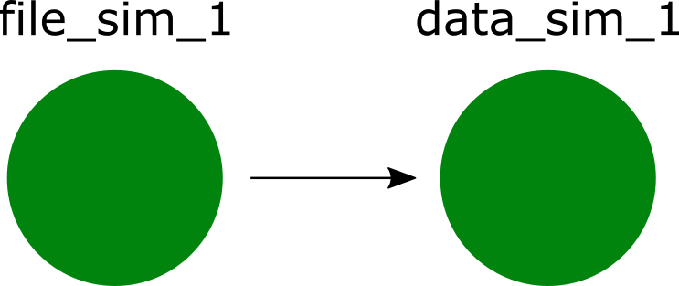

knitr::opts_chunk$set(echo = FALSE,
message = FALSE,
warning = FALSE,
dpi = 300,
cache = TRUE,
fig.height = 6,
fig.align = 'center')MELODEM data workshop
Introduction
Welcome!
Wi-Fi network name
TODO-ADD-LATER
Wi-Fi password
TODO-ADD-LATER
Hello! My name is Byron
I am an R enthusiast.
I love dogs.
I study risk
prediction + machine learning

Schedule for day 1: Morning
Introduction, data management (75m)
- Break (15m)
Decision trees and random forests (75m)
- Break (15m)
Lunch (1 hour)
Schedule for day 1: Afternoon
Develop and evaluate prediction models (75m)
- Break (15m)
Develop and evaluate causal models (75m)
- Break (15m)
Collaboration (1 hour)
Schedule for day 2: Morning
Review and discuss manuscript aims (30m)
- Align on aims and responsibilities
Three break-out sessions (60m each)
- Work independently or in small groups (45m)
- Progress updates (10m)
- Break (5m)
Wrap-up (30m)
Part 1: Introduction and data management
Set-up R packages
Make sure we all have up-to-date versions of these R packages:
# Install the packages for the workshop
pkgs <-
c("bonsai", "doParallel", "embed", "finetune", "lightgbm", "lme4",
"plumber", "probably", "ranger", "rpart", "rpart.plot", "rules",
"splines2", "stacks", "text2vec", "textrecipes", "tidymodels",
"vetiver", "remotes")
install.packages(pkgs)Set-up GitHub
Make sure we all have GitHub account with personal access token (PAT) stored in Rstudio
- Open Rstudio
- Copy/paste code below, adjust
destdir, and run
library(usethis)
create_from_github("bcjaeger/melodem-apoe4-het",
destdir = "path/of/your/choice",
fork = TRUE)Introducing targets
Your turn
- Open
_targets.Rin themelodem-apoe4-hetproject. - Run
tar_glimpse()to inspect the pipeline. - Run
tar_make()to make the pipeline.
Red sticky note if you encounter an error
Green sticky note when you have successfully made the pipeline
Working together, separately.
Why do we need all the bells and whistles?
Management of multiple datasets (
targets)Coordinating analyses over these datasets (
targets)Large amount of code from multiple authors (GitHub)
Collaborative discussions in public makes better science (GitHub)
Start with data management
In the _targets.R file:
file_sim_1_tar <- tar_target(
file_sim_1,
command = "data/sim_1-raw.csv",
format = 'file'
)
data_sim_1_tar <- tar_target(
data_sim_1,
data_prepare(file_sim_1,
age_range = c(55, 80))
)
This will be done with your data, too!
Your turn
We are going to add your data to the pipeline, carefully.
Think of a name and label for your data.
Example name: regards
Example label: Reasons for Geographic and Racial Differences in Stroke
Save a copy of your data in
data/sensitive. The name of your file should bename-raw.csvorname-raw.sas7bdat, wherenameis your data’s name. E.g.,regards-raw.csv
Your turn
We are going to add your data to the pipeline, carefully.
Switch from the R console to the terminal.
Verify you have no uncommitted changes:
git statusShould return “nothing to commit, working tree clean”
- Create a new branch with git:
git branch -b regardsYour turn
We are going to add your data to the pipeline, carefully.
- Modify the code below in
_targets.R, replacingxwith the name of your data.
# real data cohorts (to be uncommented during exercise)
file_x_tar <- tar_target( # <--- replace x with your data's name
file_x, # <--- replace x with your data's name
command = "data/sensitive/x-raw.csv", # <--- replace x with your data's name
format = 'file'
)
data_x_tar <- tar_target( # <--- replace x with your data's name
data_x, # <--- replace x with your data's name
data_prepare(cohort_name = 'x') # <--- replace x with your data's name
)- run
tar_make()in the R console.